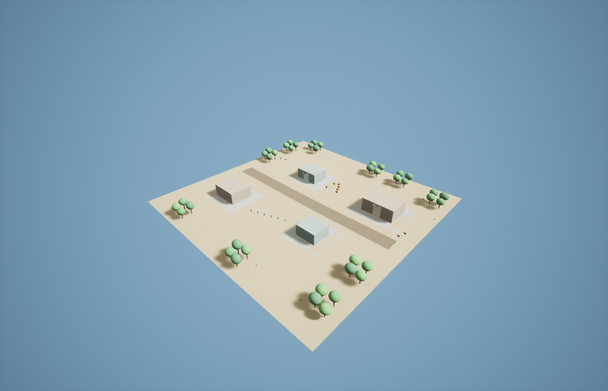
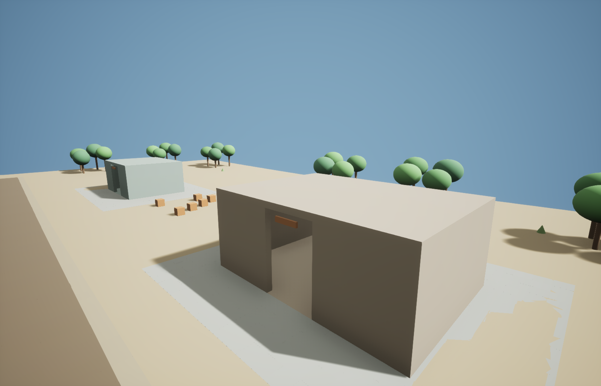

Orchestration
Creator intent becomes a versioned task graph with explicit dependencies.
An orchestration and verification layer for complex AI-assisted work. Proven in interactive 3D workflows. Proposed for trustworthy research.
AI agents can deliver outputs while leaving the work behind them difficult to inspect.
What happened? Why was a decision made? Which evidence supported it? When should a human intervene? A trustworthy workflow needs visible execution, explicit checks, and accountable decisions.
Certification is an internal prototype verification state tied to artifacts and evidence. Failed or uncertain work may stop for review instead of reaching a certified result.
Claims below are scoped to inspected historical prototype evidence.
Creator intent becomes a versioned task graph with explicit dependencies.
Task states separate execution, verification, certification, failure and human review.
World 1 recorded 11 of 11 whole-world quality gates passing.
Production V1 records append-only, hash-chained events and binds certification to artifacts and provenance.
Ambiguous outcomes require reconciliation; retry requires proven non-mutation and valid approval.
World 1 restart certification recorded zero semantic differences and 167 passing focused tests.
Scoped approval gates exist; World 5 is technically complete and stopped for Game Director review.
Department request/result contracts and policy-compatible routing are provider-neutral; universal provider interoperability is not claimed.
Existing Ten World Gauntlet and Phase Two records demonstrate the mechanics of governed execution. No claim is made that all ten worlds are certified.

Save/reload and independent cold restart recorded as passing. Review records 586 passing tests and 11 passing controlled negative tests. [C09–C10 / E05]
World 5 is technically complete, not yet Game Director certified. World 6 and Arc 32 remain on hold in the inspected record. [E06]
167 focused regression tests passed, with zero failures. The restart record preserves the listener failure, repair, collision test and subsequent successful readback. [C03, C05–C06 / E02–E04]
Terrain, environment, structure and provenance were checked before and after restart. A duplicate-process listener collision failed closed after repair. These are historical project records, not tests rerun for this website.

Public summaries reference these inspected sources. Raw reports are withheld because they contain internal details.
Production V1’s end-to-end fixture recorded four tasks, 26 events, three certifications and separate-process reopen. [C11 / E01]
Download sanitized claim and source summary ↗Record the work. Append-only events preserve execution and recovery history. [E01]
Verify before certifying. Validation binds evidence, artifacts, provenance and verifier identity. [E01–E04]
Keep failures visible. Failed work enters bounded repair or stops for human review; partial mutation is not blindly retried. [E01–E03]
Keep humans in control. Scoped approvals and review checkpoints govern progression. Evidence remains inspectable. [E01, E06]
We propose adapting GameBridge’s workflow architecture to evidence synthesis, research integrity, provenance and human oversight. The research functions below are planned, not deployed capabilities.
Proposed evidence layer
Research-source retrieval, synthesis, source/claim provenance and citation validation.
Proposed review layer
Conflicting-evidence detection, research-specific uncertainty escalation and researcher review.
Proposed integrations
Institutional research connections, subject to access, licensing and pilot agreements.
Coordinate the work. Preserve the reasoning trail. Govern the handoff.
GameBridge is not intended to replace specialist AI models or research databases. It sits above them as the orchestration, governance, validation and evidence layer. Current provider neutrality is demonstrated in department contracts and routing; research-provider integrations remain proposed. [E01]
Current limitations: local SQLite project storage; no distributed consensus in V1. Recovery requires an authoritative verifier; inconclusive observations stop for human review. [E01]
Research-specific task orchestration, research integrations and a source/claim provenance layer.
An audit interface that surfaces sources, validation outcomes, uncertainty and human decisions.
User/researcher testing, cloud/API compute and one end-to-end research pilot.
Proposed deliverables, not a committed budget allocation or a claim of grant award. Pilot partners, integrations and evaluation criteria remain to be agreed.
Founder, SSV Tech
Multidisciplinary creator, audio/media engineer, entrepreneur, and graduate student in Entertainment Business.
GameBridge is a product being developed under SSV Tech.
GameBridge currently operates as a working technical prototype in game-development and interactive 3D workflows. The research workflow demonstrated here is a proposed adaptation for the Digital Science Catalyst program and has not yet been deployed in a research institution.